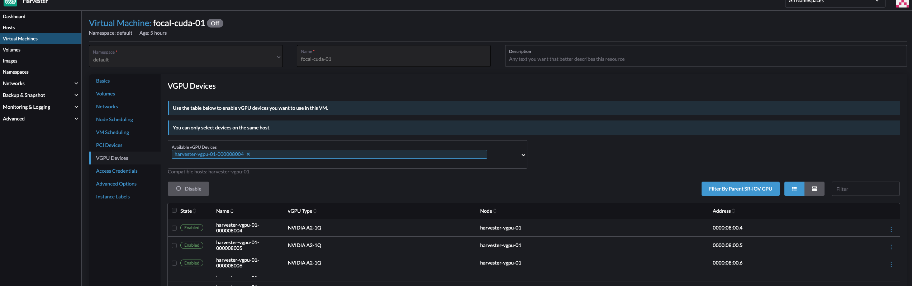

|
Dieses Dokument wurde mithilfe automatisierter maschineller Übersetzungstechnologie übersetzt. Wir bemühen uns um korrekte Übersetzungen, übernehmen jedoch keine Gewähr für die Vollständigkeit, Richtigkeit oder Zuverlässigkeit der übersetzten Inhalte. Im Falle von Abweichungen ist die englische Originalversion maßgebend und stellt den verbindlichen Text dar. |
vGPU Support
SUSE Virtualization ist in der Lage, die NVIDIA-GPU-Unterstützung für Single Root IO‑Virtualisierung (SR‑IOV) zu teilen. Diese zusätzliche Funktionalität, die durch das pcidevices-controller Add-on bereitgestellt wird, nutzt sriov-manage für das GPU-Management.
Um festzustellen, ob Ihre GPU SR-IOV unterstützt, überprüfen Sie die Gerätedokumentation. Für weitere Informationen zur Erstellung einer NVIDIA vGPU, die SR‑IOV unterstützt, siehe die NVIDIA-Dokumentation.
Sie müssen das nvidia-driver-toolkit Add-on aktivieren, um den Lebenszyklus von vGPUs auf GPU-Geräten verwalten zu können.
Verwendung
-
Gehen Sie in der Benutzeroberfläche zu Erweiterte → SR-IOV GPU-Geräte und überprüfen Sie Folgendes:
-
GPU-Geräte wurden gescannt.
-
Ein zugehöriges
sriovgpudevices.devices.harvesterhci.ioObjekt wurde erstellt.
-
-
Suchen Sie das Gerät, das Sie aktivieren möchten, und wählen Sie dann ⋮ → Aktivieren aus.

-
Gehen Sie zum Bildschirm vGPU-Geräte und überprüfen Sie die zugehörigen
vgpudevices.devices.harvesterhci.ioObjekte.Lassen Sie etwas Zeit, damit der pcidevices-controller die vGPU-Geräte scannt und die SUSE Virtualization Benutzeroberfläche die Geräteinformationen anzeigt.

-
Wählen Sie eine vGPU aus und konfigurieren Sie ein Profil.

Die Liste der Profile hängt von der GPU und dem zugrunde liegenden /sys-Baum des Hosts ab. Für weitere Informationen zu den verfügbaren Profilen und deren Funktionen siehe die NVIDIA-Dokumentation.
Nachdem Sie das erste Profil ausgewählt haben, konfiguriert der NVIDIA-Treiber automatisch die für die verbleibenden vGPUs verfügbaren Profile.
-
Fügen Sie die vGPU einer neuen oder bestehenden VM hinzu.

Sobald eine vGPU einer VM zugewiesen wurde, kann es möglicherweise nicht möglich sein, die VM zu deaktivieren, bis die vGPU entfernt wurde.
MIG-unterstützte vGPU-Geräte
|
Die folgenden Informationen gelten nur für NVIDIA-GPUs, die die Multi-Instance GPU (MIG)-basierte Partitionierung unterstützen, wie die A100, H100 und H200. |
SUSE Virtualization ermöglicht es, MIG-unterstützte vGPUs über virtuelle Maschinen hinweg zu teilen. MIG-unterstützte vGPUs befinden sich auf einer GPU-Instanz in einer MIG-fähigen physischen GPU. Jede ansässige MIG-unterstützte vGPU hat exklusiven Zugriff auf die Engines der GPU-Instanz, einschließlich der Rechen- und Video-Decodierungs-Engines.
SUSE Virtualization erstellt das MIGConfiguration Objekt nur, wenn die erkannte GPU MIG‑basierte Partitionierung unterstützt.
Aktivierung von MIG-unterstützten vGPU-Geräten
-
Gehen Sie in der SUSE Virtualization Benutzeroberfläche zu Erweiterte → vGPU MIG-Konfigurationen und überprüfen Sie Folgendes:
-
Eine MIG-Konfiguration wurde zur Unterstützung von GPU-Geräten erstellt.
-
Ein zugehöriges
migconfiguration.devices.harvesterhci.ioObjekt wurde erstellt.
-
-
Definieren Sie die MIG-Profile für Ihre GPU und aktivieren Sie die MIG-Konfiguration.
Bitte beachten Sie die Dokumentation der GPU für Informationen zur MIG-Konfiguration und verfügbaren Kombinationen.

-
Gehen Sie zu Erweiterte → vGPU-Geräte und aktivieren Sie das vGPU-Gerät, das mit der MIG-Konfiguration verbunden ist.
Die neu erstellten MIG-Profile sind als gültige vGPU-Typen verfügbar.
Sobald aktiviert, kann das vGPU-Gerät mit einer virtuellen Maschine verwendet werden.

Nutzungsbeschränkungen
Anschließen mehrerer vGPUs
Das Anschließen mehrerer vGPUs an eine VM kann aus folgenden Gründen fehlschlagen:
-
Nicht alle vGPU-Profile unterstützen das Anschließen mehrerer vGPUs. Die NVIDIA-Dokumentation listet die vGPU-Profile auf, die diese Funktion unterstützen. Wenn Sie beispielsweise NVIDIA A2- oder A16-GPUs verwenden, beachten Sie, dass nur Q-Serie-vGPUs es Ihnen ermöglichen, mehrere vGPUs anzuschließen.

-
Nur 1 GPU-Gerät in der VM-Definition kann
ramFBaktiviert haben. Um mehrere vGPUs anzuhängen, müssen Sie die VM-Konfiguration (in YAML) bearbeiten undvirtualGPUOptionszu allen nicht primären vGPU-Geräten hinzufügen.virtualGPUOptions: display: ramFB: enabled: falseVerwandtes Problem: https://github.com/harvester/harvester/issues/5289
Obergrenze für verwendbare vGPUs
Wenn die vGPU-Unterstützung auf einer GPU aktiviert ist, erstellt der NVIDIA-Treiber standardmäßig 16 vGPU-Geräte. Nachdem Sie das erste Profil ausgewählt haben, konfiguriert der NVIDIA-Treiber automatisch die für die verbleibenden vGPUs verfügbaren Profile.
Das verwendete Profil bestimmt auch die maximale Anzahl an vGPUs, die für jede GPU verfügbar sind. Sobald die maximale Anzahl erreicht ist, können keine Profile für die verbleibenden vGPUs ausgewählt werden, und diese Geräte können nicht konfiguriert werden.
Beispiel (NVIDIA A2 GPU):
Wenn Sie das NVIDIA A2-4Q Profil auswählen, können Sie nur 4 vGPU-Geräte konfigurieren. Sobald diese Geräte konfiguriert sind, können keine Profile für die verbleibenden vGPUs ausgewählt werden.

Technischer Tiefgang
Der pcidevices-controller führt die folgenden CRDs ein:
-
sriovgpudevices.devices.harvesterhci.io
-
vgpudevices.devices.harvesterhci.io
Beim Booten scannt der pcidevices-controller den Host nach NVIDIA GPUs, die SR-IOV vGPU-Geräte unterstützen. Wenn solche Geräte gefunden werden, werden sie als CRD dargestellt.
Beispiel:
apiVersion: devices.harvesterhci.io/v1beta1
kind: SRIOVGPUDevice
metadata:
creationTimestamp: "2024-02-21T05:57:37Z"
generation: 2
labels:
nodename: harvester-kgd9c
name: harvester-kgd9c-000008000
resourceVersion: "6641619"
uid: e3a97ee4-046a-48d7-820d-8c6b45cd07da
spec:
address: "0000:08:00.0"
enabled: true
nodeName: harvester-kgd9c
status:
vGPUDevices:
- harvester-kgd9c-000008004
- harvester-kgd9c-000008005
- harvester-kgd9c-000008016
- harvester-kgd9c-000008017
- harvester-kgd9c-000008020
- harvester-kgd9c-000008021
- harvester-kgd9c-000008022
- harvester-kgd9c-000008023
- harvester-kgd9c-000008006
- harvester-kgd9c-000008007
- harvester-kgd9c-000008010
- harvester-kgd9c-000008011
- harvester-kgd9c-000008012
- harvester-kgd9c-000008013
- harvester-kgd9c-000008014
- harvester-kgd9c-000008015
vfAddresses:
- "0000:08:00.4"
- "0000:08:00.5"
- "0000:08:01.6"
- "0000:08:01.7"
- "0000:08:02.0"
- "0000:08:02.1"
- "0000:08:02.2"
- "0000:08:02.3"
- "0000:08:00.6"
- "0000:08:00.7"
- "0000:08:01.0"
- "0000:08:01.1"
- "0000:08:01.2"
- "0000:08:01.3"
- "0000:08:01.4"
- "0000:08:01.5"
Wenn ein SRIOVGPUDevice aktiviert ist, arbeitet der pcidevices-controller mit dem nvidia-driver-toolkit Daemonset zusammen, um die GPU-Geräte zu verwalten.
Bei einem nachfolgenden Scan des /sys-Baums durch die pcidevices werden die vGPU-Geräte vom pcidevices-controller gescannt und als VGPUDevices CRD verwaltet.
NAME ADDRESS NODE NAME ENABLED UUID VGPUTYPE PARENTGPUDEVICE harvester-kgd9c-000008004 0000:08:00.4 harvester-kgd9c true dd6772a8-7db8-4e96-9a73-f94c389d9bc3 NVIDIA A2-4A 0000:08:00.0 harvester-kgd9c-000008005 0000:08:00.5 harvester-kgd9c true 9534e04b-4687-412b-833e-3ae95b97d4d1 NVIDIA A2-4Q 0000:08:00.0 harvester-kgd9c-000008006 0000:08:00.6 harvester-kgd9c true a16e5966-9f7a-48a9-bda8-0d1670e740f8 NVIDIA A2-4A 0000:08:00.0 harvester-kgd9c-000008007 0000:08:00.7 harvester-kgd9c true 041ee3ce-f95c-451e-a381-1c9fe71918b2 NVIDIA A2-4Q 0000:08:00.0 harvester-kgd9c-000008010 0000:08:01.0 harvester-kgd9c false 0000:08:00.0 harvester-kgd9c-000008011 0000:08:01.1 harvester-kgd9c false 0000:08:00.0 harvester-kgd9c-000008012 0000:08:01.2 harvester-kgd9c false 0000:08:00.0 harvester-kgd9c-000008013 0000:08:01.3 harvester-kgd9c false 0000:08:00.0 harvester-kgd9c-000008014 0000:08:01.4 harvester-kgd9c false 0000:08:00.0 harvester-kgd9c-000008015 0000:08:01.5 harvester-kgd9c false 0000:08:00.0 harvester-kgd9c-000008016 0000:08:01.6 harvester-kgd9c false 0000:08:00.0 harvester-kgd9c-000008017 0000:08:01.7 harvester-kgd9c false 0000:08:00.0 harvester-kgd9c-000008020 0000:08:02.0 harvester-kgd9c false 0000:08:00.0 harvester-kgd9c-000008021 0000:08:02.1 harvester-kgd9c false 0000:08:00.0 harvester-kgd9c-000008022 0000:08:02.2 harvester-kgd9c false 0000:08:00.0 harvester-kgd9c-000008023 0000:08:02.3 harvester-kgd9c false 0000:08:00.0
Wenn ein Benutzer ein Profil für das VGPUDevice aktiviert und auswählt, richtet der pcidevices-controller das Gerät ein und konfiguriert das richtige Profil auf dem genannten Gerät.
apiVersion: devices.harvesterhci.io/v1beta1
kind: VGPUDevice
metadata:
creationTimestamp: "2024-02-26T03:04:47Z"
generation: 8
labels:
harvesterhci.io/parentSRIOVGPUDevice: harvester-kgd9c-000008000
nodename: harvester-kgd9c
name: harvester-kgd9c-000008004
resourceVersion: "21051017"
uid: b9c7af64-1e47-467f-bf3d-87b7bc3a8911
spec:
address: "0000:08:00.4"
enabled: true
nodeName: harvester-kgd9c
parentGPUDeviceAddress: "0000:08:00.0"
vGPUTypeName: NVIDIA A2-4A
status:
configureVGPUTypeName: NVIDIA A2-4A
uuid: dd6772a8-7db8-4e96-9a73-f94c389d9bc3
vGPUStatus: vGPUConfigured
Der pcidevices-controller führt auch ein vGPU-Geräte-Plugin aus, das die Details der verschiedenen vGPU-Profile an den Kubelet bewirbt. Dies wird dann vom k8s-Scheduler verwendet, um die vGPUs, die von der VM angefordert werden, den richtigen Knoten zuzuweisen.
(⎈|local:harvester-system)➜ ~ k get nodes harvester-kgd9c -o yaml | yq .status.allocatable cpu: "24" devices.kubevirt.io/kvm: 1k devices.kubevirt.io/tun: 1k devices.kubevirt.io/vhost-net: 1k ephemeral-storage: "149527126718" hugepages-1Gi: "0" hugepages-2Mi: "0" intel.com/82599_ETHERNET_CONTROLLER_VIRTUAL_FUNCTION: "1" memory: 131858088Ki nvidia.com/NVIDIA_A2-4A: "2" nvidia.com/NVIDIA_A2-4C: "0" nvidia.com/NVIDIA_A2-4Q: "2" pods: "200"
Der pcidevices-controller führt auch das Setup der Integration mit Kubevirt durch und bewirbt die vGPU-Geräte als extern verwaltete Geräte im Kubevirt CR, um sicherzustellen, dass die VM die vGPU nutzen kann.